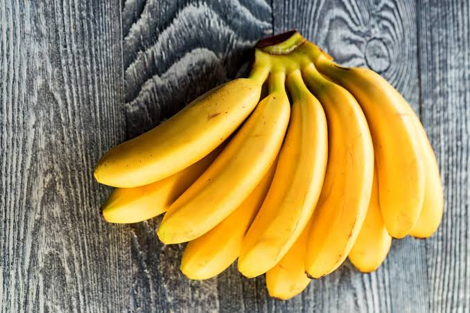
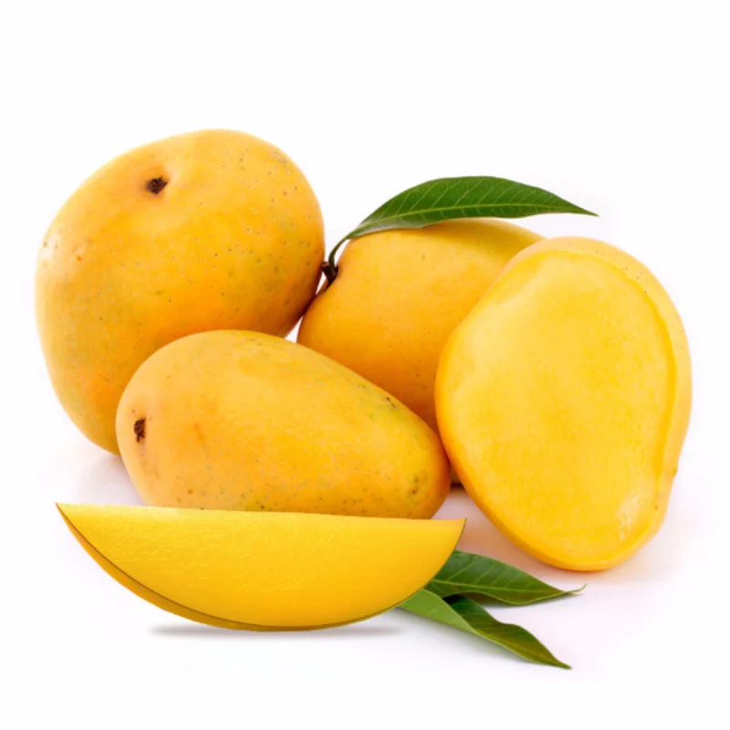
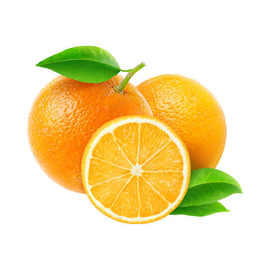
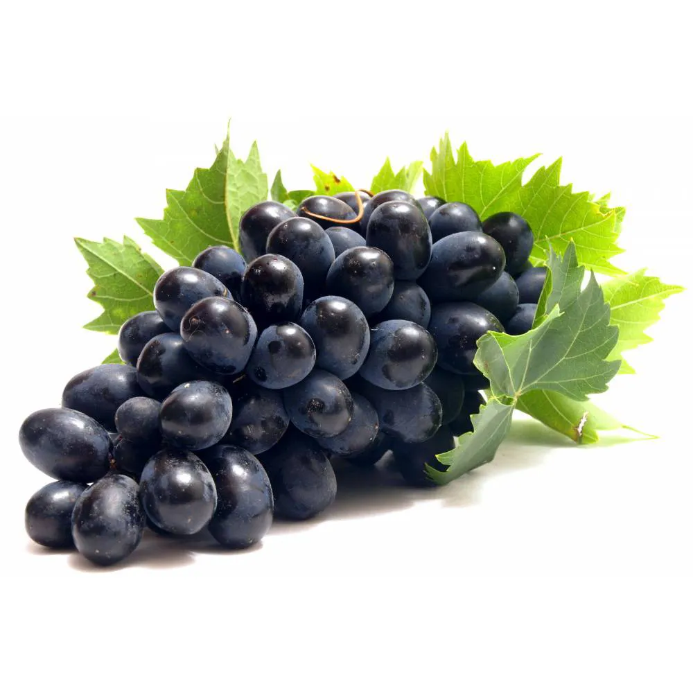

Apple

Apples are crunchy, sweet-tart fruits that grow on trees and come in red, green, or yellow varieties. They are one of the most widely eaten fruits in the world and are often called nature's toothbrush.
Benefits of Apple:- Rich in dietary fiber (pectin), which supports healthy digestion
- Loaded with antioxidants like quercetin that boost immunity
- Supports heart health by helping lower bad cholesterol
- Low glycemic index helps control blood sugar levels
- Keeps you full longer, useful for weight management
Banana

Bananas are soft, sweet tropical fruits with a peel that turns from green to yellow as they ripen. They are a favorite quick snack for athletes and children alike.
Benefits of Banana:- High in potassium, which supports muscle and nerve function
- Provides quick, natural energy from easily digestible carbs
- Contains fiber that improves gut health and digestion
- Helps regulate blood pressure
- Contains vitamin B6, which supports brain and mood health
Mango

Known as the "king of fruits," mangoes are juicy, fragrant, and golden-orange inside. They are especially popular in summer across South Asia.
Benefits of Mango:- Rich source of Vitamin A and C, supporting eye and immune health
- Contains enzymes that aid protein digestion
- Antioxidants help protect skin from damage
- Supports healthy vision due to beta-carotene content
- Good source of natural sugars for quick energy
Orange

Oranges are juicy citrus fruits known for their bright color and refreshing tangy-sweet taste. They are one of the richest natural sources of Vitamin C.
Benefits of Orange:- Very high in Vitamin C, strengthening the immune system
- Keeps skin healthy and glowing by boosting collagen production
- Good source of fiber that aids digestion
- Helps reduce bad cholesterol levels
- Hydrating due to its high water content
Grapes

Grapes are small, juicy fruits that grow in clusters and come in green, red, or black varieties. They can be eaten fresh or dried into raisins.
Benefits of Grapes:- Packed with antioxidants like resveratrol that protect cells
- Supports heart health by improving blood circulation
- High water content helps with hydration
- Contains vitamins K and C for bone and skin health
- May help improve memory and brain function